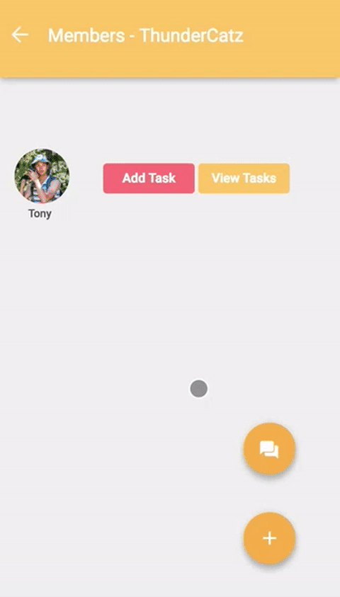
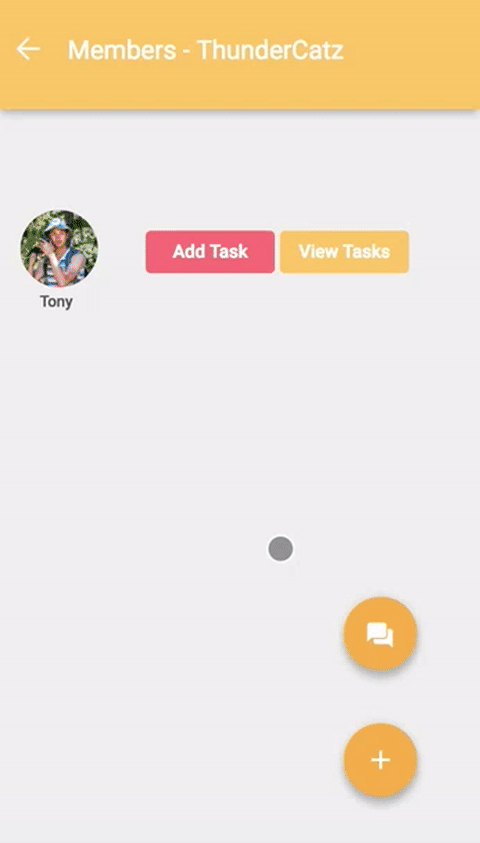

In this individual project, I built from scratch a web prototype of a "To-Do List" Mobile App using HMTL, CSS, and JS. I started with Lo-Fi Paper Prototypes, then transitioned into Mid/Hi-Fi screens in Sketch and Invision. Finally it culminated in an interactive web prototype optimized for mobile view.
Informed by my Mid and Hi-Fi prototypes, I built an interactive version using HTML, CSS and JavaScript.

 
View the live protoype here!

View the live protoype here!
The eventual web version had some visual differences from the mock ups and the paper prototypes, but the core functions remained the same. I leveraged CSS and JQuery animations to emulate the real user experience of using the app in mobile and web forms.
Created rapid paper prototypes and conducted user tests to evaluate the effectiveness of each iteration.
Used prototyping tools such as Sketch and Invision to visualize final design.
Hand coded a functional mobile-optimized web prototype using HTML/CSS/JS from scratch.
Rapid iteration and testing prevented me from having tunnel vision, I realized early on I had missed some features that should've been there all along.
Mid to Hi-Fi prototyping can reveal previouly overlooked features in Lo-Fi prototypes!
Greatly improved my knowledge of CSS and JS because I didn't rely on templates or Bootstrap.